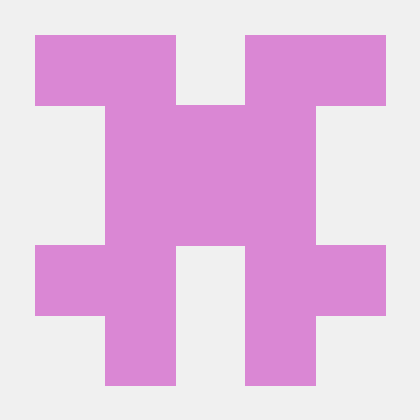

Founding team
The people building Galileo.
We are three co-founders working across the engine, the browser, testing, and the day-to-day work of moving the project forward.



Working together
Shared ownership, different day-to-day focus.
The areas above are not fixed job titles. We work across the project and make the important decisions together.